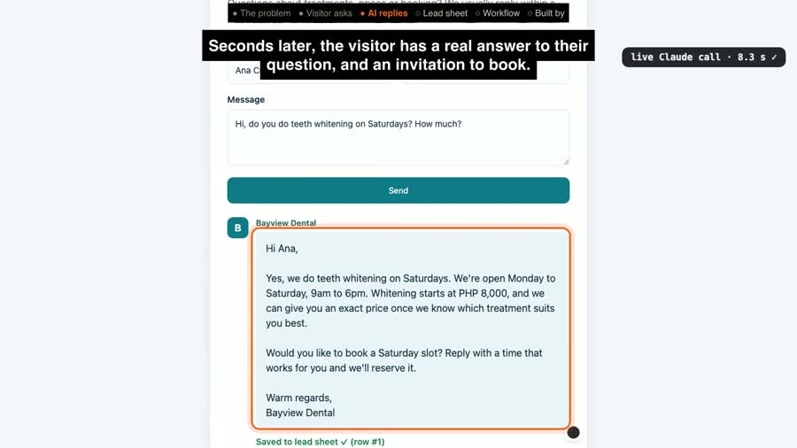
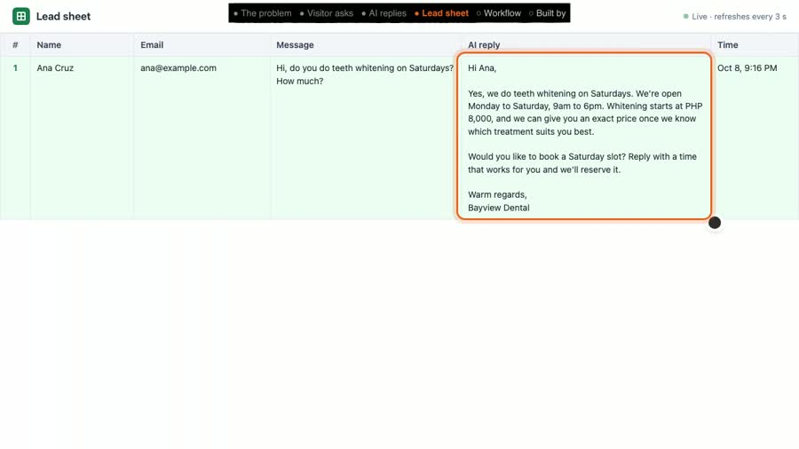

AI lead responder: every website enquiry answered in seconds, even at 9 PM
A visitor asks a clinic a question on its website. About 8 seconds later they get a helpful answer, and the clinic gets the lead and the reply saved for the morning. Nobody has to be online. I built it with n8n and Claude.
The problem: late questions become lost patients
A patient asks a question at 9 PM. Nobody is at the front desk. By morning, they have booked with another clinic.
How it works: four steps
Every time someone sends the website form, one n8n workflow runs these four steps on its own:
- New lead (webhook). The website form sends the visitor's name, email and message to an n8n webhook.
- Draft reply (AI). n8n sends the message to Claude with the clinic's facts (hours, services, prices) and asks for a short, warm reply that answers the question and invites the person to book.
- Save to lead sheet (Postgres). The name, email, question and the AI reply are saved as one new row in the clinic's lead table.
- Send reply. n8n returns the reply to the website, so the visitor reads the answer right under their question.
The real AI reply, word for word
In the recorded test, a visitor named Ana Cruz asked: Hi, do you do teeth whitening on Saturdays? How much?
8.3 seconds later she got this reply, written live by Claude (nothing pre-written):
Hi Ana, Yes, we do teeth whitening on Saturdays. We're open Monday to Saturday, 9am to 6pm. Whitening starts at PHP 8,000, and we can give you an exact price once we know which treatment suits you best. Would you like to book a Saturday slot? Reply with a time that works for you and we'll reserve it. Warm regards, Bayview Dental


Results (measured in the recorded run)
- 8.3 seconds from pressing Send to the full reply on screen.
- 1 of 1 leads saved: the test lead landed as row #1 in the lead sheet, with the reply beside it.
Honest note: Bayview Dental is a demo clinic I made up to show the system. The workflow, the AI reply and the timing above are real, from one recorded run. There are no client results here, and I am not claiming any.
Tools used
- n8n (self-hosted): runs the four steps (Webhook, HTTP Request, Postgres and Respond to Webhook nodes).
- Claude (Anthropic): writes the reply.
- Postgres: stores the lead list.
View the code on GitHub → (workflow, schema, demo scripts, MIT licence)
How I'd set this up for your business
- You tell me your services, prices, hours.
- I connect it to your website form (or another channel).
- We test it together with real questions your customers ask, until the replies sound like you.
- You get every lead in one list: Postgres, Google Sheets or your CRM, whichever you already use.
FAQ
Can it use Google Sheets instead of Postgres?
Yes. n8n has a built-in Google Sheets node, so step 3 (save the lead) can write a new row to a Google Sheet instead of a Postgres table. This demo uses Postgres.
Does it work with Facebook Messenger?
Not in this demo, which uses a website form. To use Messenger, step 1 would receive messages from a Facebook Page through a Meta developer app webhook, and step 4 would send the reply back through Messenger. That needs admin access to your Page, a Meta app, and Meta's review before it can answer the public. The AI and lead-sheet steps stay the same.
How long does it take to set up?
I have not set this up for a paying client yet, so I won't quote a number from history. The workflow itself is only four steps. What it takes: your business details, access to your website form, a place to run n8n, and testing replies with real questions.
Will the AI make things up?
It is told to answer only from the facts you give it and to invite the person to book. AI can still get things wrong, so every question and reply is saved in the lead sheet where your team can check it, and anything it shouldn't answer (like medical advice) can be routed to a person instead.
What does it cost to run?
Two running costs: hosting n8n (self-hosted on a small server, or an n8n Cloud plan) and AI usage, which the AI provider bills per reply. I would estimate both from your monthly lead volume before we start.
Video transcript
Full narration of the 65-second demo video, with start times.
A dental clinic gets a question at nine at night. Nobody is at the front desk, and by morning that lead has booked somewhere else.
Here, a visitor asks Bayview Dental about teeth whitening on a Saturday, and presses send.
The message goes to an n8n workflow, which asks Claude to draft a reply. This is a live call, nothing is pre-written.
Seconds later, the visitor has a real answer to their question, and an invitation to book.
Every lead also lands in the clinic's lead sheet, with the AI reply right beside it, so the team can follow up in the morning.
The whole workflow is four steps. New lead. Draft the reply with AI. Save it to the lead sheet. Send the reply.
Built by McKeen Asma, AI Automation VA, with n8n.
Next: the chat assistant, same clinic: it answers, books and hands off →